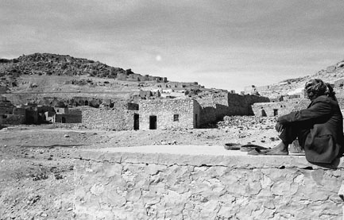
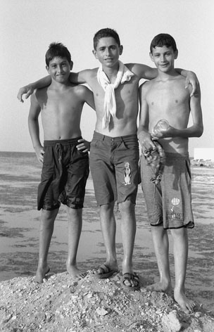
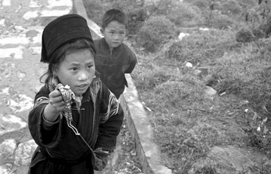
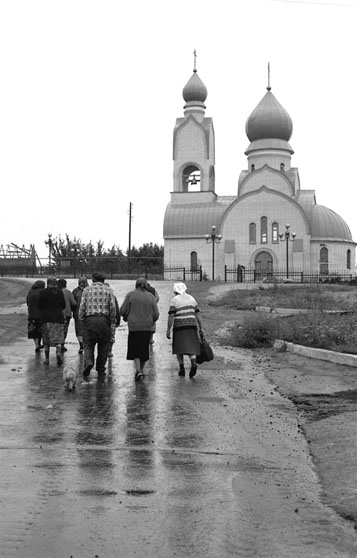
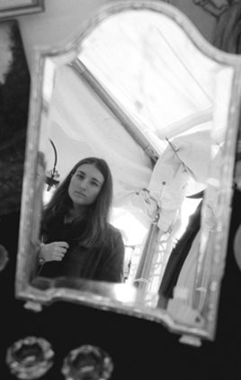
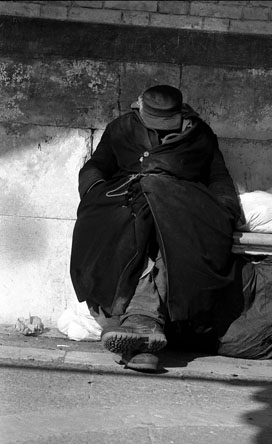
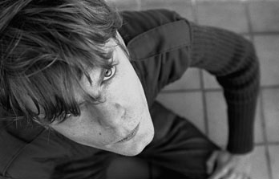

Hayette Soussou
Pêcheuse de regards
Hayette Soussou est une pêcheuse de regards d'hommes (femmes, enfants), surpris en un "clin d'oeil" par l'objectif, dans
leur élan - trouble, immanent, pensif, intime. Le décor - urbain, paysager, maritime - devient l'élément naturel,
renforçant ces regards, colorant de toutes les nuances de noir et blanc une candeur, un tourment, une présence involontairement
complices de la photographe dans sa quête de "reflets de l'âme".

à donner dans la performance "spectaculaire" -, il est clair que le travail de Hayette Soussou se veut
résolument sans artifices ni dérives ;
 "Habib, veilleur du désert habité..."
le spectacle humain vient à elle tel qu'il est en lui-même, dès lors que le petit mystère d'une émotion,
d'une tendresse, quelque pensée de peine ou de joie l'habite.
"A quoi pensez-vous" semblent demander les images de la capteuse de ces regards "cosmopolites"...
Chaque photo, de l'adolescente devant son miroir, du pêcheur vietnamien sur sa péniche,
du SDF vénitien au "veilleur du désert habité" apporte sa lueur de réponse....

"You know what ? We are happy..."




 
